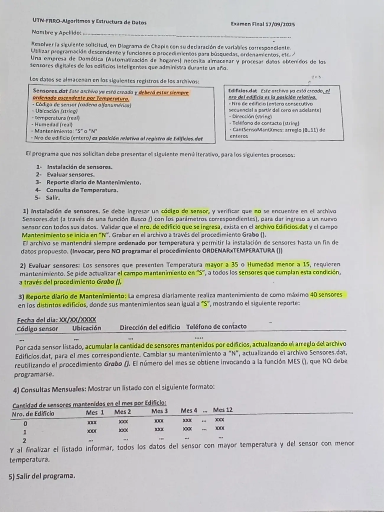

Final, 17/09/2025 (Domótica)
3° parcial y final, 17/09/2025
Enunciado


Propuesta de respuesta
Respuesta no verificada. La propuso Luta Studios con inteligencia artificial y ningún docente la revisó. Puede tener errores.
La hoja pide el diagrama de Chapin. Va un diagrama por módulo, con su declaración de variables arriba, y primero el del programa principal. Si un diagrama no entra en la pantalla, tocalo para verlo completo. Después de los diagramas está el mismo algoritmo en Python, para que lo puedas probar. Las sentencias de archivos van con las palabras reservadas de Python (open, pickle.load, pickle.dump, seek, tell). Los textos se completan con ljust para que los registros midan lo mismo. El tamaño de un registro sale de tell() después de leer el primero.
Menú iterativo
1- Instalación de sensores
2- Evaluar sensores
3- Reporte diario de mantenimiento
4- Consulta de temperatura
El mismo algoritmo en Python
Es el programa que se probó, con las mismas sentencias y en el mismo orden que las cajas. Cada Leer del diagrama es un input, convertido a int o float según la declaración, y cada Mostrar es un print.
import os
import pickle
from datetime import date
class Sensor:
def __init__(self):
self.codigo = ""
self.ubicacion = ""
self.temperatura = 0.0
self.humedad = 0.0
self.mantenimiento = "N"
self.nroEdificio = 0
class Edificio:
def __init__(self):
self.nro = 0
self.direccion = ""
self.telefono = ""
self.cantSensoMantXmes = [0]*12
# afSensores, afEdificios: str
# alSensores, alEdificios: archivo
# tamEdi: int
afSensores = "Sensores.dat"
afEdificios = "Edificios.dat"
alSensores = open(afSensores, "r+b")
alEdificios = open(afEdificios, "r+b")
pickle.load(alEdificios)
tamEdi = alEdificios.tell()
def Busco(cod):
# Secuencial: Sensores.dat está ordenado por temperatura, no por código
# cod: str
# tam, pos, p: int
# reg: Sensor
tam = os.path.getsize(afSensores)
pos = -1
alSensores.seek(0, 0)
while alSensores.tell() < tam and pos == -1:
p = alSensores.tell()
reg = pickle.load(alSensores)
if reg.codigo == cod:
pos = p
return pos
def Grabo(reg, pos):
# reg: Sensor
# pos: int (byte donde empieza el registro)
alSensores.seek(pos, 0)
pickle.dump(reg, alSensores)
alSensores.flush()
def INSTALACION():
# cod: str
# cantEdi: int
# reg: Sensor
# Fin de datos: código "*"
cantEdi = os.path.getsize(afEdificios) // tamEdi
cod = input("Código de sensor (* para terminar): ")
while cod != "*":
if Busco(cod.ljust(10, " ")) != -1:
print("Ese sensor ya está instalado")
else:
reg = Sensor()
reg.codigo = cod.ljust(10, " ")
reg.ubicacion = input("Ubicación: ").ljust(30, " ")
reg.temperatura = float(input("Temperatura: "))
reg.humedad = float(input("Humedad: "))
reg.nroEdificio = int(input("Nro de edificio: "))
while reg.nroEdificio < 0 or reg.nroEdificio >= cantEdi:
reg.nroEdificio = int(input("No existe ese edificio: "))
reg.mantenimiento = "N"
Grabo(reg, os.path.getsize(afSensores))
ORDENARxTEMPERATURA()
cod = input("Código de sensor (* para terminar): ")
def EVALUAR():
# tam, pos: int
# reg: Sensor
tam = os.path.getsize(afSensores)
alSensores.seek(0, 0)
while alSensores.tell() < tam:
pos = alSensores.tell()
reg = pickle.load(alSensores)
if reg.temperatura > 35 or reg.humedad < 15:
reg.mantenimiento = "S"
Grabo(reg, pos)
def REPORTE():
# tam, pos, cont: int
# hoy: date
# reg: Sensor
# edi: Edificio
hoy = date.today()
print("Fecha del día:", hoy.strftime("%d/%m/%Y"))
print("Código sensor / Ubicación / Dirección del edificio / Teléfono de contacto")
tam = os.path.getsize(afSensores)
cont = 0
alSensores.seek(0, 0)
while alSensores.tell() < tam and cont < 40:
pos = alSensores.tell()
reg = pickle.load(alSensores)
if reg.mantenimiento == "S":
alEdificios.seek(reg.nroEdificio * tamEdi, 0)
edi = pickle.load(alEdificios)
print(reg.codigo, reg.ubicacion, edi.direccion, edi.telefono)
edi.cantSensoMantXmes[MES() - 1] = edi.cantSensoMantXmes[MES() - 1] + 1
alEdificios.seek(reg.nroEdificio * tamEdi, 0)
pickle.dump(edi, alEdificios)
alEdificios.flush()
reg.mantenimiento = "N"
Grabo(reg, pos)
cont = cont + 1
def MOSTRAR_SENSOR(reg):
# reg: Sensor
print(reg.codigo, reg.ubicacion, reg.temperatura, reg.humedad, reg.mantenimiento, reg.nroEdificio)
def CONSULTA():
# tam, tamSen, m: int
# edi: Edificio
# reg: Sensor
print("Cantidad de sensores mantenidos en el mes por edificio")
tam = os.path.getsize(afEdificios)
alEdificios.seek(0, 0)
while alEdificios.tell() < tam:
edi = pickle.load(alEdificios)
print(edi.nro, end=" ")
for m in range(12):
print(edi.cantSensoMantXmes[m], end=" ")
print()
tam = os.path.getsize(afSensores)
if tam == 0:
print("No hay sensores")
else:
alSensores.seek(0, 0)
reg = pickle.load(alSensores)
tamSen = alSensores.tell()
print("Menor temperatura:")
MOSTRAR_SENSOR(reg)
alSensores.seek(tam - tamSen, 0)
reg = pickle.load(alSensores)
print("Mayor temperatura:")
MOSTRAR_SENSOR(reg)
# Programa principal
# opcion: int
opcion = 0
while opcion != 5:
print("1- Instalación de sensores")
print("2- Evaluar sensores")
print("3- Reporte diario de mantenimiento")
print("4- Consulta de temperatura")
print("5- Salir")
opcion = int(input("Opción: "))
while opcion < 1 or opcion > 5:
opcion = int(input("Opción inválida: "))
match opcion:
case 1:
INSTALACION()
case 2:
EVALUAR()
case 3:
REPORTE()
case 4:
CONSULTA()
alSensores.close()
alEdificios.close()Respuesta no verificada. Puede tener errores.
Se armó con la hoja del examen y la página del 3° parcial y final (registros como clase, recorrer, búsquedas, actualizar un registro y alta). Las operaciones de archivos siguen las diapositivas de merge y corte de control. El Chapin sigue la forma de las diapositivas del examen de Historia Clínica de 2019. Edificios.dat se lee por posición relativa, como dice la hoja.
Quedó en duda: MES() se tomó como el mes de 1 a 12, y por eso se resta 1 para el índice. El reporte toma los primeros 40 sensores con mantenimiento en S en el orden del archivo, que es por temperatura. El sensor de menor temperatura es el primero del archivo y el de mayor, el último, porque el archivo está siempre ordenado. Grabo recibe el registro y el byte donde va. Para un alta se le pasa el tamaño del archivo, que es el final. El código de sensor se completa a 10 caracteres y la ubicación a 30, porque la hoja no da los largos. En Python, pickle graba un entero menor que 256 en menos bytes que uno más grande. Por eso un contador de sensores por mes que pasa de 255 cambia el tamaño del registro del edificio. Entonces el registro deja de coincidir con la posición que calcula el programa. El material pide registros del mismo tamaño y solo muestra cómo lograrlo con textos (ljust). Las pruebas se hicieron con datos que no cambian el tamaño. La fecha del día sale de date.today(), de la librería datetime que aceptan los TP. Las diapositivas de la materia no muestran en Chapin la lectura de datos ni la selección múltiple. Acá van como Leer y como Según, con una columna por caso.
¿Cómo te fue?
Marcá cada tema del examen.
- ArchivosSecuencial y de acceso directo, en 3° parcial y final
- Posición relativaCómo viene el examen, en 3° parcial y final
- BúsquedaBúsqueda secuencial, en 2° parcial